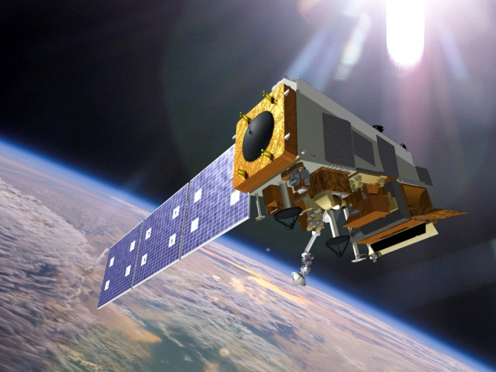
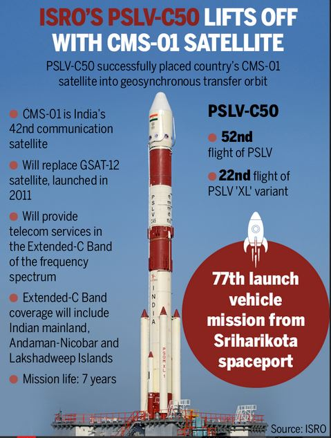

India's satellite programs, primarily led by the Indian Space Research Organisation (ISRO), encompass a range of satellites designed to support communication, remote sensing, navigation, and scientific research. These satellites not only cater to India's domestic needs but also contribute to global satellite services.
Here’s a detailed overview of the different categories, notable satellites, and information about satellite coverage:
Communication Satellites

- Purpose: India's communication satellites are designed to support telecommunication, broadcasting, internet services, and emergency communication.
- Satellite Series: INSAT and GSAT series.
Notable Satellites:
- INSAT-1B (1983): One of India’s first communication satellites, providing television, telecommunications, and meteorological services.
- GSAT-6 (2015): Designed for mobile communication, supporting secure communication for the defense sector.
- GSAT-11 (2018): Known as the "Big Bird," this is one of ISRO's heaviest communication satellites, offering high-speed internet connectivity across India, especially in rural and remote areas.
- CMS-01 (2020): A replacement for the aging GSAT-12, enhancing communication services in the Indian mainland and island territories.

Applications:
These satellites support television broadcasts, mobile and internet communication, disaster management systems, and are also used by Indian defense forces.